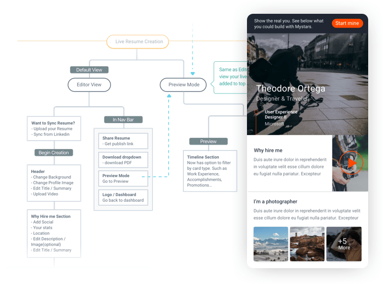
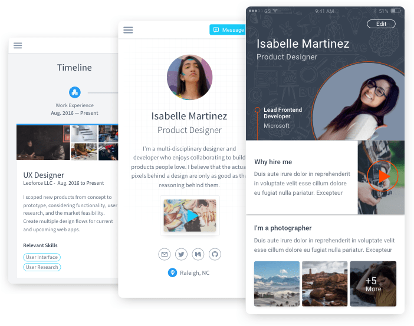

Mystars
Stories make us human
MyStars provides a place for job candidates to present who their true selves to potential employers, to go beyond the resume and control when and how their professional profiles are available. Recruiters care who you are beyond the facts and figures on a resume. That’s why they research candidates’ digital footprints. Get ahead of the Googling and show your full and dynamic persona right up front. Tell the stories and show the results behind the facts and figures on your resume.
Where to start?
At the discovery phase of the product, I conducted off-site user interviews at job fairs in order to get a better understanding of the problem. If we are making a resume builder, then we needed to know what job seekers are currently using and why. What applications are they using to create their resumes? Have they ever paid for pro help? Did they create their resume with an end career goal in mind or simply to fit the role they are applying to? These and many other questions led us to a conclusion that we must go beyond a resume builder to bring value to our future users. That soft skills and culture fit are becoming just as important to employers as technical skills and subject matter expertise.

Go with the flow
The process of creating and sharing a private profile was a tough one to land. The task at hand was to make a flow where the user could create their profile in seconds, market in minutes, and update any time. A clear and easy navigation structure was key and we achieved this with profile templating based on five questions we ask during onboarding and auto suggesting what to write to make your profile successful depending on where you want to take your career.
User testing with early concepts
Designing Mystars was a challenge due to tight time constraints and business objectives. To improve our odds, the goal at this stage was to find ways to get us more in sync with our users regarding assumed functionality. And at this level of fidelity, there was a limitation of feedback since there isn’t much to tangibly interact with. Still the verbal feedback received further helps answer our assumption, but more importantly, it keeps our users and what they’re doing with our product front and center in our process.

Iterations
Once it was better understood the needs that our product needed to fulfill, I began to put some of these higher fidelity solutions to the test. I learned quickly there is no single perfect solution and there will always be upsides and downsides for all of them. Because certain interactions are not yet built into the prototype, an experience can fail but much can still be learned. We got to see our user’s expectations on certain screens. What stood out as interesting or confusing and what they expected should happen when they clicked this or that.